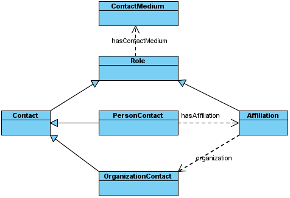

NEPOMUK Contact Ontology
Task-Force Ontologies
- Latest Version:
- http://www.semanticdesktop.org/ontologies/nco
- This Version:
- http://www.semanticdesktop.org/ontologies/2007/03/22/nco
This file refers to the Revision 9 of NIE. Minor changes may be implemented in future revisions.
With each new revision, the documentation and all serializations of the ontology will be updated.
- Authors:
- Antoni Mylka, DFKI, antoni.mylka@dfki.de
- Leo Sauermann, DFKI, leo.sauermann@dfki.de
- Michael Sintek, DFKI, michael.sintek@dfki.de
- Ludger van Elst, DFKI, elst@dfki.uni-kl.de
- Editor:
- Antoni Mylka, DFKI, antoni.mylka@dfki.de
- Contributors:
- Evgeny 'phreedom' Egorochkin, KDE Strigi Developer, stexx@mail.ru
- Christiaan Fluit, Aduna, christiaan.fluit@aduna-software.com
- Ontology:
- XML/RDFS Serialization: NCO
(Data Graph Only)
- XML/RDFS Serialization: NCO
(Metadata Graph Only)
- TriG Serialization: NCO
(Graph Set)
Copyright © 2007 DFKI®
The ontologies are made available under the terms of NEPOMUK software license
Abstract
NEPOMUK Contact Ontology
describes contact information, common in many places on the desktop. It
evolved from the VCARD specification (RFC 2426)
and has been inspired by the Vcard Ontology
by Renato Ianella. The scope of NCO is much broader though. This
document gives an overview of the classes, properties and intended use
cases of the NCO ontology.
Status of this document
This document arose from
the work of the Task-Force ontologies within the NEPOMUK project.
This document is a DRAFT made available by the Nepomuk Consortium for
discussion only. This document is a work in progress and may be
updated, replaced, or rendered obsolete by other documents at any time.
This document is a part
in a set of seven documents, which together comprise the complete
specification of the Nepomuk Information Element Ontology Framework.
These are: NIE,
NFO,
NCO,
NMO,
NCAL,
NEXIF,
NID3.
1. Introduction
The purpose of the Nepomuk Contact Ontology (NCO) is to describe
contact information. It is one of the core elements of every Personal
Information Management system and Nepomuk is no exception. Origins of
this ontology can be traced back to VCARD specification published in [RFC2426]. The first attempt to
convert RFC 2426 to RDF was made by Renato Ianella and published in a
W3C working group note [VCARDRDF].
This ontology doesn't meet Nepomuk requirements though. Most of the
properties don't have their domains and ranges set. It uses certain
modelling techniques that result in untyped blank nodes. Those few
range constraints that have been set are violated
in the examples provided with the specification document.
All of this led to a decision to create a new ontology. This
opportunity has been used to fill in the missing domain and range
constraints and to expand the ontology with the concepts of Roles and
arbitrary contact media. It came at a cost of reduced compatibility
with the VCARD specification. The goal was to allow for lossless import
of vCard data. Exporting vCard files might require discarding some
information, since NCO is more expressive.
The meaning of the term 'Contact' in
NCO is quite wide. It is every piece of data that identifies an entity
or provides means to communicate with it. This definition has two
aspects - identification and communication. NCO covers both of them.
A very high level diagram of the scope
of NCO is outlined in the figure above. It has two axes: content and
complexity. The vertical one refers to the various kinds of entities
mentioned in the definition of a Contact. They include people and
organizations but in a general case anything that can be contacted, can
be represented by an instance of the Contact class. This generality is
justified by
the fact, that in many cases automatic agents can be contacted with
various means.
Many companies operate automatic IVR systems the users may call to
obtain information or place orders. Emails are sent by various software
systems to notify the recipient of some event. In all of these cases, a
user might want to reprent such entities on a contact list, even though
they are neither people, nor organizations.
The horizontal axis represents the
broad spectrum of use cases for this ontology. The left end is intended
to cover simple bits of information about contacts. Such information is
usually found in various places on a desktop. Recipients of emails,
authors of documents, attendees of calendar events. All of
these small pieces of data refer to Contacts, even though they are not
parts of a typical addressbook or a Contact list.
The rightmost end of the horizontal
axis represents cases where a Contact refers
to an entry in an Addressbook. There are numerous applications that
allow the user to manage a list of contacts. They usually store many
pieces of data. In many cases a single person appears in various roles,
as a private person and as an employee of a company or an organization.
These roles are usually connected with their own addresses (private and
business), telephone numbers, email addresses etc. Cases when a person
is affiliated with multiple organizations make the matters even more
complicated. NCO tries to provide means to express this role-based
approach.
The most important classes are
outlined in the Figure below.

Contact is the core class of
NCO. It provides various properties for the purpose of identifying an
entity. They include mostly names, either as one string - (fullname or split into
constituent parts - nameFamily,
nameGiven etc).
The communication information is expressed with subclasses of the ContactMedium
class. They provide various means of communication. An entire hierarchy
of various ContactMedia has been presented. Available subclasses
include: PostalAddress,
PhoneNumber, EmailAddress, and IMAccount. Each medium is
equipped with specific properties. For instance the PostalAddress can
be split into various parts, an IMAccount has
an instant messaging identifier,
a status and a status
message status message.
A single Contact has one
default role (expressed by the fact that the Contact class is a
subclass of Role. This makes it
easier to use Contacts in places where little information is available
(leftmost end of the complexity axis). When contacts are extracted from
places where they are described in more detail (rightmost end of the
complexity axis) the distinction between multiple roles can be
expressed. NCO provides means to describe contact information to a
person (PersonContact
class that is affiliated (Affiliation)
with multiple Organizations (OrganizationContact).
-
nco-contact.ttl
A simple NCO Contact. It represents an individual, with some contact media
affiliated with an organization. His work address and telephone is also
expressed.
-
nco-key.ttl
Demonstrates how to attach information about public keys. NCO doesn't have
any particular vocabulary for elements of public keys. A key is treated as
an attachment file. Future NIE extensions may add more expressive vocabulary
for this.
-
nco-photossounds.ttl
Demonstrates how to attach information about photos and sounds to a contact.
They are also expressed as attachments, but NIE provides vocabulary that can
be used to interpret those attachments as InformationElements of a concrete
type.